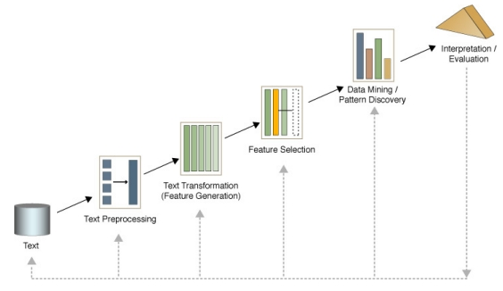
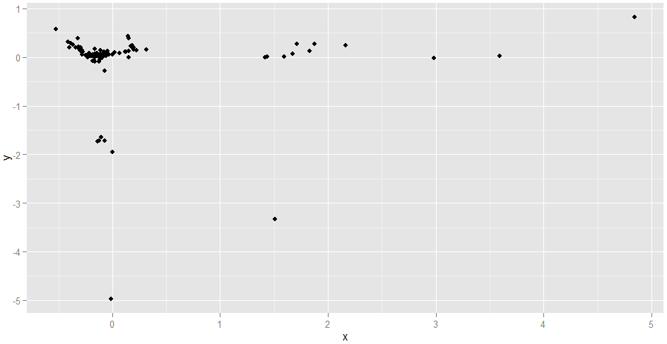
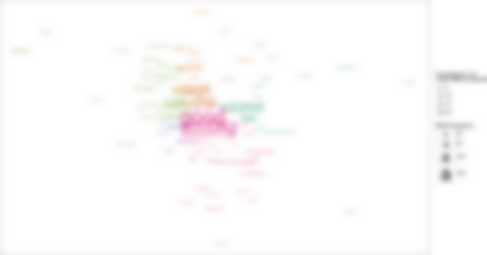

Analysis of Police Survey Data
Presentation for the OPCC, Norfolk
Ali Arsalan Kazmi
Introduction
England and Wales Police & Crime Commissioner Elections, 2012
Norfolk Policing Survey: "Making a Difference"
- Quantitative & Qualitative questions
- Crime, Anti-social behaviour, Customer Service, etc.
Analysis of survey
- To gain information on views of people at Norfolk
- Information gained would assist in policy-making
Quantitative Data
Research Questions
- Is complaint, x, correlated with age, y?
- What's the difference between the means of various age groups of respondents?
- What is the frequency distribution of respondents from various districts?
- Is there a causal relationship between age, y, and the type of complaint submitted, x?
- Cluster Analysis: can respondents be grouped based on variables such as x or y?
- etc.
Qualitative Data
Research Questions
- Is x correlated with y?
- What's the difference between the means of various age groups of respondents?
- What is the frequency distribution of respondents from various districts?
- Is there a causal relationship between age and the type of complaint submitted?
- Cluster Analysis: can respondents be grouped based on their characteristic variables?
- etc.
Qualitative Data
Research Questions
Is x correlated with y?What's the difference between the means of various age groups of respondents?What is the frequency distribution of respondents from various districts?Is there a causal relationship between age and the type of complaint submitted?Cluster Analysis: can respondents be grouped based on their characteristic variables?etc.
Qualitative Data
Research Questions
- Which are the most frequent/important words?
- What are the contents of the responses?
- Which responses are similar/dissimilar?
- Which words are related/unrelated?
- What sentiment is expressed in responses?
- etc.
Everyday language is a part of the human organism and is no less complicated than it.
Qualitative Data
Challenges
Natural Language
Synoynmy
- Do 'theft' and 'burglary' have different meanings for our purposes?
Polysemy
- 'Patrol' as noun and verb
Domain specific words
- 'Beat' in the police terminology
Words influenced by History/Culture
Qualitative Data is different...
Text Mining!
But: How?
Text Mining Framework

Obtained from Dr. Beatriz's lecture on Text Mining
Phase 1: Text Preprocessing
Phase 1: Text Preprocessing
Objective: Apply operations to 'reshape' data into a format suitable for Text Mining.
Standardisation
- To give a unified format to all data
Stopwords Removal
- "That", "this", "mine", "should" are not informative
- Domain-specific stopwords
Thesaurus
- 'Bobby' and 'Police'
- 'Car parks' and 'Parking'.
- 'Crime' and 'Offence'
Phase 1: Stopwords & Thesaurus
Example
- Document 1:
This is a vital issue and more bobbies must be on the beat. Increase the beat.
- Document 2:
Police needs to solve the problem. Car parks have been taken over by bicycles! Please increase Police beat too!
- Document 3:
I am a cyclist and I am proud of it!
Phase 1: Stopwords & Thesaurus
Example
- Document 1:
This is a vital issue and more bobbies must be on the beat. Increase the beat.
- Document 2:
Police needs to solve the problem. Car parks have been taken over by bicycles! Please increase Police beat too!
- Document 3:
I am a cyclist and I am proud of it!
Phase 1: Stopwords & Thesaurus
Example
- Document 1:
vital issue more police must be on beat increase beat
- Document 2:
police needs solve problem car parks taken over by bicycle please increase police beat
- Document 3:
bicyclist proud
Section Summary
Text Preprocessing objectives:
- To standardise textual data found in different formats
- To remove irrelevant/less informative words
- To replace synonymous words with a single word expressing the same meaning
Text Preprocessing Techniques:
- Standardisation of documents
- Stopwords' removal
- Thesaurus
Phase 2: Feature Generation
Phase 2: Feature Generation
Objective: Apply operations to generate representations of Textual data.
- Basic unit of representation
- Terms (single words, word pairs, phrases)
- Documents/responses
- Choose a matrix format to generate from representation units
- Term-Document Matrix (Salton et al., 1975)
- Term-Affiliations Matrix
- Choose settings for matrix
- Binary Frequency
- Term Frequency
- Term Frequency X Inverse Document Frequency
Phase 2: Term-Document Matrix (Binary)
- Term-Document Matrix
- A representation of textual data in which Terms are represented as rows, and documents(responses) as columns.
- Easily produced automatically.
- Word sequences not accounted for.
- Statistical Semantics Hypothesis (Weaver, 1955; Furnal et al., 1983)
- Binary Frequency
- A representation that takes into account the presence/absence of Terms, by using 1s and 0s.
Phase 2: Term-Document Matrix (Binary)
| Words | Document 1 | Document 2 | Document 3 |
|---|---|---|---|
| beat | 1 | 1 | 0 |
| bicycle | 0 | 1 | 0 |
| bicyclist | 0 | 0 | 1 |
| car | 0 | 1 | 0 |
| increase | 1 | 1 | 0 |
| issue | 1 | 0 | 0 |
| ... | ... | ... | ... |
Phase 2: Term-Document Matrix (Term Frequency)
- Term-Document Matrix
- A representation of textual data in which Terms are represented as rows, and documents as columns.
- Easily produced automatically.
- Word sequences not accounted for.
- Statistical Semantics Hypothesis (Weaver, 1955; Furnal et al., 1983)
- Term Frequency
- A representation that takes into account the total number of times a Term occurs in a Document.
- Term importance defined by its frequency
- More frequent words attain greater importance
Phase 2: Term-Document Matrix (Term Frequency)
| Words | Document 1 | Document 2 | Document 3 |
|---|---|---|---|
| beat | 2 | 1 | 0 |
| bicycle | 0 | 1 | 0 |
| bicyclist | 0 | 0 | 1 |
| car | 0 | 1 | 0 |
| increase | 1 | 1 | 0 |
| issue | 1 | 0 | 0 |
| ... | ... | ... | ... |
Phase 2: Term-Document Matrix (Tf-Idf)
- Term-Document Matrix
- A representation of textual data in which Terms are represented as rows, and documents as columns.
- Easily produced automatically.
- Word sequences not accounted for.
- Statistical Semantics Hypothesis (Weaver, 1955; Furnal et al., 1983)
- Term Frequency X Inverse Doc. Frequency
- A representation that takes into account the number of times a Term occurs in documents, as well as the total number of Documents in which it occurs.
- Term importance defined by a high Term frequency and a low document frequency
- Rare terms in the document collection that possibly define their documents attain greatest importance
Phase 2: Term-Document Matrix (Tf-Idf)
| Words | Document 1 | Document 2 | Document 3 |
|---|---|---|---|
| beat | 0.528 | 0.176 | 0 |
| bicycle | 0 | 0.4771 | 0 |
| bicyclist | 0 | 0 | 0.4771 |
| car | 0 | 0.4771 | 0 |
| increase | 0.176 | 0.176 | 0 |
| issue | 0.4771 | 0 | 0 |
| ... | ... | ... | ... |
Phase 2: Term-Affiliations Matrix
- Term-Affiliations Matrix
- Also known as Word co-occurrences matrix
- Term Frequency
Phase 2: Term-Affiliations Matrix
| Words | beat | bicycle | bicyclist | car | increase | issue | ... |
|---|---|---|---|---|---|---|---|
| beat | 5 | 1 | 0 | 0 | 3 | 2 | ... |
| bicycle | 1 | 1 | 0 | 1 | 1 | 0 | ... |
| bicyclist | 0 | 0 | 1 | 0 | 0 | 0 | ... |
| car | 1 | 1 | 0 | 1 | 1 | 0 | ... |
| increase | 3 | 1 | 0 | 1 | 2 | 1 | ... |
| issue | 2 | 0 | 0 | 0 | 1 | 1 | ... |
| ... | ... | ... | ... | ... | ... | ... | ... |
Section Summary
- Feature Generation objectives:
- To generate a representation of terms (words, phrases, etc.) and responses/documents
- Representation can be of different types:
- Term-Document Matrix
- Term-Affiliations Matrix
- etc.
- To assign importance to terms as required for analysis:
- Binary
- Term Frequency
- Term Frequency - Inverse Document Frequency
- etc.
Phase 3: Feature Selection
Phase 3: Feature Selection
- There may exist a large number of Terms in a Term Document Matrix (High-Dimensionality)
Phase 3: Feature Selection
- There may exist a large number of Terms in a Term Document Matrix (High-Dimensionality)
| Word # | Words | Document 1 | Document 2 | Document 3 | ... |
|---|---|---|---|---|---|
| 1 | beat | 2 | 1 | 0 | ... |
| 2 | bicycle | 0 | 1 | 0 | ... |
| 3 | bicyclist | 0 | 0 | 1 | ... |
| 4 | car | 0 | 1 | 0 | ... |
| 5 | increase | 1 | 1 | 0 | ... |
| 6 | issue | 1 | 0 | 0 | ... |
| ... | ... | ... | ... | ... | ... |
| 4573 | zeal | 1 | 0 | 0 | ... |
- Not all of the Terms will be useful
- Many Terms only present in a few documents (known as Sparse Terms)
- Unclear how these Terms are related to other, frequently occurring ones
Phase 3: Feature Selection
- There may exist a large number of Terms in a Term Document Matrix (High-Dimensionality)
| Word # | Words | Document 1 | Document 2 | Document 3 | ... |
|---|---|---|---|---|---|
| 1 | beat | 2 | 1 | 0 | ... |
| 2 | bicycle | 0 | 1 | 0 | ... |
| 3 | bicyclist | 0 | 0 | 1 | ... |
| 4 | car | 0 | 1 | 0 | ... |
| 5 | increase | 1 | 1 | 0 | ... |
| 6 | issue | 1 | 0 | 0 | ... |
| ... | ... | ... | ... | ... | ... |
| 4573 | zeal | 1 | 0 | 0 | ... |
- A large number of Terms poses challenges to efficient computation
- In addition to Text Mining operations
Phase 3: Feature Selection
- There may exist a large number of Terms in a Term Document Matrix (High-Dimensionality)
| Word # | Words | Document 1 | Document 2 | Document 3 | ... |
|---|---|---|---|---|---|
| 1 | beat | 2 | 1 | 0 | ... |
| 2 | bicycle | 0 | 1 | 0 | ... |
| 3 | bicyclist | 0 | 0 | 1 | ... |
| 4 | car | 0 | 1 | 0 | ... |
| 5 | increase | 1 | 1 | 0 | ... |
| 6 | issue | 1 | 0 | 0 | ... |
| ... | ... | ... | ... | ... | ... |
| 4573 | zeal | 1 | 0 | 0 | ... |
- Objective: Focus only on important Terms
Phase 3: Feature Selection
How to measure Feature/Term Importance?
Depends on the Text Mining operation to be applied and type of data in Term-Document Matrix
Term Frequency lowerbounds
- Discard all Terms with a value less than a pre-determined lowerbound
Term Frequency X Inverse Document Frequency lowerbounds
- Discard all Terms with a value less than a pre-determined lowerbound
Preset Sparsity level for Terms
etc.
Section Summary
- Not all terms in a Term-Document Matrix will be important
- Feature Selection Objective:
- To distinguish important terms from unimportant terms
- Choice of Feature Selection measure:
- Depends on the task (Classification, Clustering) and type of data in Term-Document Matrix
- Term Frequency lowerbounds
- Sparsity level lowerbounds
- etc.
Phase 4: Text Mining Operations
Text Mining: Research Questions
- Which are the most frequent/important words?
- What are the contents of the responses?
- Which responses are similar/dissimilar?
- Which words are related/unrelated?
- What sentiment is expressed in responses?
- etc.
Text Mining: Research Questions
- Which are the most frequent/important words?
- What are the contents of the responses?
- Which responses are similar/dissimilar?
- Which words are related/unrelated?
- What sentiment is expressed in responses?
- etc.
Clustering: Dendrogram

Clustering: Dendrogram
Objectives
- Organise data
- Simplify data
Clustering: Dendrogram
Objectives
Organise data
- Use and reveal inherent relationships
- Derive relationships using similarity measures
Simplify data
- Especially for large datasets
Clustering: Dendrogram
Objectives
Organise data
- Use and reveal inherent relationships
- Derive relationships using similarity measures
Simplify data
- Especially for large datasets
Clustering
Clustering algorithms detect relationships inherent in data by detecting statistical patterns
- Hierarchical (Dendrograms)
- Non-Hierarchical (Associative Word Clouds)
Usually represent patterns by using distance measures
- For example, Euclidean/ordinary distance
- Other distance measures do exist
Place data in a Euclidean space
Clustering

Clustering
Clustering algorithms detect relationships inherent in data by detecting statistical patterns
- Hierarchical (Dendrograms)
- Non-Hierarchical (Modified Word Clouds)
Usually represent patterns by using distance measures
- For example, Euclidean (ordinary) distance
- Others: Manhattan, Mahalanobis, etc.
Place data in a Euclidean space
Use Similarity measures to identify groups, intra-group and inter-group linkages
- Single-Linkage, Average-Linkage, etc.
- Cosine, Jaccuard, etc.
Similar data tend to lie close to each other
Clustering: Results
Dendrogram

Clustering: Results
Dendrogram
- Hierarchies of groups identified
- Largest and smallest clusters identified
- Summary of data realised
But
- Frequencies of terms not represented
- Possibly gets hard to interpret with large datasets
Clustering: Results
Associative Word Clouds

- Associative Word clouds display Term Frequency and relationships
Clustering: Results
Associative Word Clouds

Clustering: Results
Associative Word Clouds

Section Summary
Clustering Objectives:
- Organise data
- Identify inherent relationships/patterns in data using similarity measures
- Use the relationships to group data
After Clustering:
- Data in one group is most similar to data in the same group
- Data in one group is dissimilar from data in other groups
Clustering Graphics:
- Dendrograms
- Associative Word Clouds
Qualitative Data
Research Questions
- Which are the most frequent/important words?
- What are the contents of the responses?
- Which responses are similar/dissimilar?
- Which words are related/unrelated?
- What sentiment is expressed in responses?
- etc.
Qualitative Data
Research Questions
- Which are the most frequent/important words?
- What are the contents of the responses?
- Which responses are similar/dissimilar?
- Which words are related/unrelated?
- What sentiment is expressed in responses?
- etc.
Sentiment Analysis
Sentiment Analysis
- Responses may express sentiments
- What do 'negative' responses state about policing?
- What do 'positive' responses state about policing?
- What do respondents complain about?
- What do respondents praise?
- Analyse popularity of policies
- etc.
Sentiment Analysis
How?
Supervised Approach
- Use a classifier
- Train it
- Test it
Unsupervised Approach
- Formulate a dictionary of 'Negative' and 'Positive' words
- Look for the dictionary words in responses
Unsupervised + Heuristics Approach
- Formulate a dictionary of 'Negative' and 'Positive' words and Grammatical rules
- Look for dictionary words + grammatical rules in responses
Sentiment Analysis: Supervised
- Extract a sufficient number of responses from original data
- Partition the extracted data into 'Training' and 'Testing' samples
- \[Dataset_{Complete} (2000 responses)\]
- \[Dataset_{Train} (1200 responses) \subset Dataset_{Complete}\]
- \[Dataset_{Test} (800 responses) \subset Dataset_{Complete}\]
- Label the Training and Testing samples for sentiment
- Train a classifier (mathematical model) on Training samples for sentiment
- Test the trained classifier on Testing samples and report accuracy
- Deploy for use on unlabelled, new data.
Sentiment Analysis: Unsupervised
Generally:
- Formulate/download a dictionary of words pre-labelled for sentiment
- Possibly formulate different dictionaries for nouns, adjectives, etc.
- Check for presence of 'Positive' or 'Negative' words in responses
Sentiment Analysis: Unsupervised + Heuristics
- Formulate/download a dictionary of words pre-labelled for sentiment
- Possibly formulate different dictionaries for nouns, adjectives, etc
- Formulate and incorporate heuristics/rules for Grammar
- Check for presence of 'Positive' or 'Negative' words in responses
- Incorporate heuristics to make Sentiment tagging of words extensible
- Positive/Negative Adjectives would affect Nouns
- Adverbs would affect Verbs
- etc.
Sentiment Analysis: Results
Results of Sentiment Analysis + Phrase clouds = Negative Phrase Cloud

Sentiment Analysis: Results
Negative Phrase Cloud
- Highlights phrases occurring in 'Negative' responses
- Scales phrase size according to frequency
Sentiment Analysis: Results
Negative Phrase Cloud
- Council Tax
- Anti-Social behaviour
Section Summary
- Sentiments may be expressed in responses
- Sentiment Analysis Objective:
- Identify sentiments from responses
- Identification can be useful in many ways
- Identify complaints
- Identify praises
- Measure popularity of policies
- Techniques for Sentiment Analysis:
- Supervised
- Unsupervised
- Unsupervised + Heuristics
Further Research Directions
Further Research in Text Mining
Utilise:
- Twitter data
- Sometimes active
- Facebook data
- Sometimes active
- Local newspapers' data
- Active
Further Research in Sentiment Analysis
Utilise:
- Twitter data
- Facebook data
Further Research in Sentiment Analysis
- Combine demographics with Sentiment Analysis
- Is there a relationship between Age and Sentiment?
- Can clusters be formed on Demographics + Sentiment?
- How do Sentiments change over a period of time, x?
- Is there a trend in the shift of Sentiments?
- Do Sentiments change due to introduction of policies?
- Can ideological differences be identified?
- Can political affiliations be determined?
- etc.
Further Research in Social Network Analysis
- Utilise Twitter data
- Utilise Facebook data
- Identify types of users connected to OPCC on Twitter
- Combine with Sentiment Analysis
- Opinion Diffusion
- etc.
A Prototype Textual Analytics Application
- Supports basic Text Mining Operations
- Data Pre-processing
- Feature Generation & Weighting
- Clustering
- Associative Word Clouds
- Network of Words
A Prototype Textual Analytics Application
- Limitations
- Memory constraints
- Only 1 corpus per analysis
- Approximately 2000 words/terms supported
- 3000-4000 documents supported
- Requires R and Java
- Other Text Mining operations not supported
Thanks to
- Mr. Peter Haystead for inviting to the OPCC, Norfolk
- Dr. Beatriz De La Iglesia for lectures on Data and Text Mining
- Ramnath Vaidyanathan for Slidify
- RStudio for Shiny
- Hadley Wickham for GGPlot2
- Ingo Feirener, Kurt Hornik for Tm
- Igraph authors, for Igraph
- Drew Conway, for various tutorials